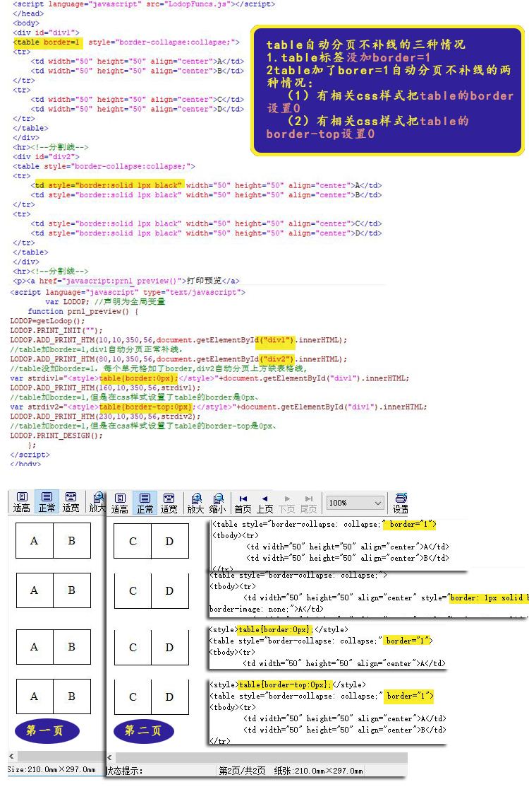

LODOP中table加了borer=1自动分页不补线的情况
之前的cnblog里的博文：LODOP中table自动分页补线加border，介绍了ADD_PRINT_HTM自动分页后，可以补线，补线需要table标签设置border。简短问答：
1.表格自动分页后上面缺少边线。
直接在table标签里加border属性。table border="1"，试试。
在table标签里加了border=1，排查下css样式，是否有类似table的border设置0px.或table的border-top设置0px等情况，去掉那些css样式。
2.表格单元格没连起来，存在空隙
在table标签里设置cellspacing="0" cellpadding="0"试试。
--简短问答结束----
并不是设置table标签里加了border=1,ADD_PRINT_HTM自动分页后就一定可以补线，如果页面样式较多，还要排查是否有相关的css样式把table的border设置为0了。
如果有相关css样式把table的border设置为0了，table标签里即使加了border=1也不会自动补线。
如下面代码和图示：
1、table加了border=1，且没有相关css样式把table的border设置0。可以正常自动分页补线。
2、table没加border=1，只是在每个td里加了border，不能自动补线。
3、table加了border=1,有相关css样式把table的border设置0,不能自动补线。
4、table加了border=1,有相关css样式把table的border-top设置0,不能自动补线。
测试例子地址：表格自动分页不补线的三种情况
测试代码：
<head> <meta http-equiv="Content-Type" content="text/html; charset=utf-8" /> <title>lodop表格自动分页补线</title> <script language="javascript" src="LodopFuncs.js"></script> </head> <body> <div id="div1"> <table border=1 style="border-collapse:collapse;"> <tr> <td width="50" height="50" align="center">A</td> <td width="50" height="50" align="center">B</td> </tr> <tr> <td width="50" height="50" align="center">C</td> <td width="50" height="50" align="center">D</td> </tr> </table> </div> <hr><!--分割线--> <div id="div2"> <table style="border-collapse:collapse;"> <tr> <td style="border:solid 1px black" width="50" height="50" align="center">A</td> <td style="border:solid 1px black" width="50" height="50" align="center">B</td> </tr> <tr> <td style="border:solid 1px black" width="50" height="50" align="center">C</td> <td style="border:solid 1px black" width="50" height="50" align="center">D</td> </tr> </table> </div> <hr><!--分割线--> <p><a href="javascript:prn1_preview()">打印预览</a> <script language="javascript" type="text/javascript"> var LODOP; //声明为全局变量 function prn1_preview() { LODOP=getLodop(); LODOP.PRINT_INIT(""); LODOP.ADD_PRINT_HTM(10,10,350,56,document.getElementById("div1").innerHTML); //table加border=1,div1自动分页正常补线， LODOP.ADD_PRINT_HTM(80,10,350,56,document.getElementById("div2").innerHTML); //table没加border=1，每个单元格加了border,div2自动分页上方缺表格线, var strdiv1="<style>table{border:0px};</style>"+document.getElementById("div1").innerHTML; LODOP.ADD_PRINT_HTM(160,10,350,56,strdiv1); //table加border=1,但是在css样式设置了table的border是0px、 var strdiv2="<style>table{border-top:0px};</style>"+document.getElementById("div1").innerHTML; LODOP.ADD_PRINT_HTM(230,10,350,56,strdiv2); //table加border=1,但是在css样式设置了table的border-top是0px、 LODOP.PRINT_DESIGN(); }; </script> </body>
图示：
